op://vault/item/field path cut off at 260 px. The vault prefix repeats on every row, so the item and field, the only parts that tell rows apart, are the parts that get cut off. Two defects also put work at risk. A layout change throws away the unsaved draft without a word. And a wrong field can read set while its name is hidden by the cut-off.
| # | Severity | What I saw | Why it fails Kent | Fix |
|---|---|---|---|---|
| 1 | blocking | Browse vault is a hidden mode switch. Before it, each row is a text box that clips mid-path with no ellipsis. After it, each row is a dropdown. The trigger sits below Add, far from the rows it changes, and keeps its label after loading. 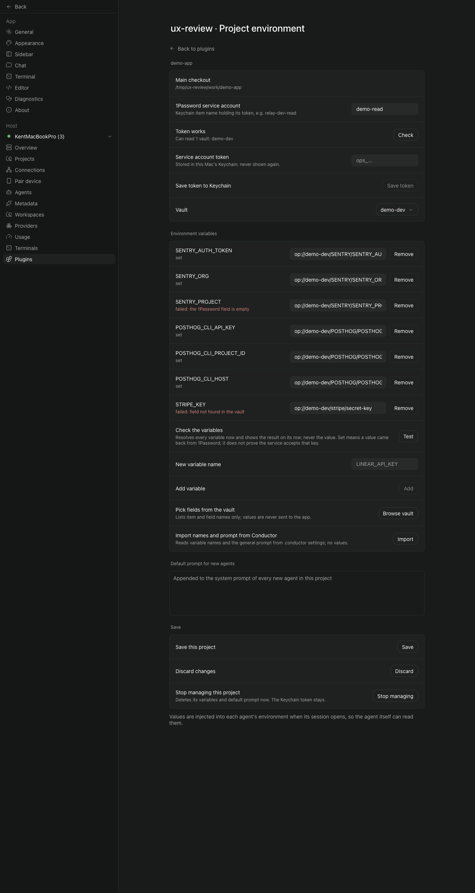 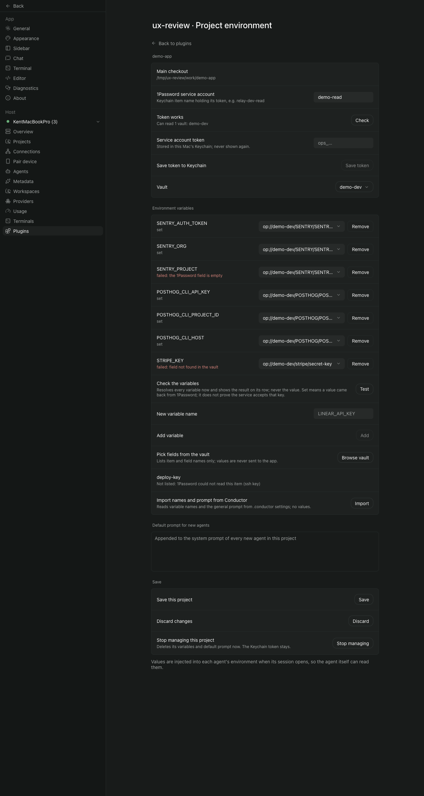 |
A button that reads as "look" acts as "change every row". The rows Kent already filled in change kind under his hand. This is exactly his 2026-10-22 complaint. Two ways to set the same value, depending on whether a button was pressed earlier, means two mental models for one field. | One control per row, in every state: a field picker that loads the vault the first time it opens. Remove the card-level Browse row. Manual op:// entry becomes a "Type a reference" choice inside the picker. |
| 2 | blocking | The reference hides what tells rows apart. It is 260 px wide, with the vault prefix repeated on every row, then cut off. At 400 px, three different rows read the same "op://.../SENTRY/SENTR..." (m03). A wrong field is hidden by the same cut-off. 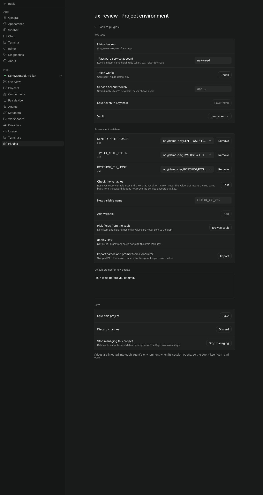 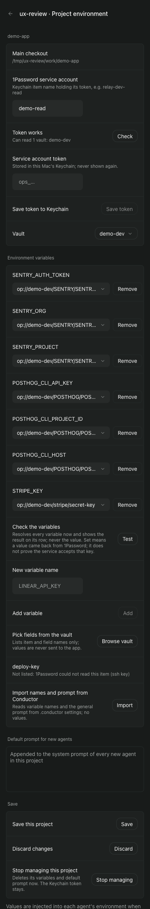 |
Kent cannot check his mapping by reading the screen, and the only proof, Test, says set for a wrong field. A mis-mapped secret reaches agents looking correct. | Show ITEM › field without the vault, which is already shown once above. Never cut off the field label. Put the full path in a muted second line or a tooltip. Flag "field label differs from variable name" as a soft warning. |
| 3 | blocking | A layout change throws away the draft. Resizing the window across a width between 700 and 800 px returns to the project list. The added row, picks, typed prompt, and an unsaved new project are all lost. It is not a reload: a page marker survived and the daemon saw no new connection. 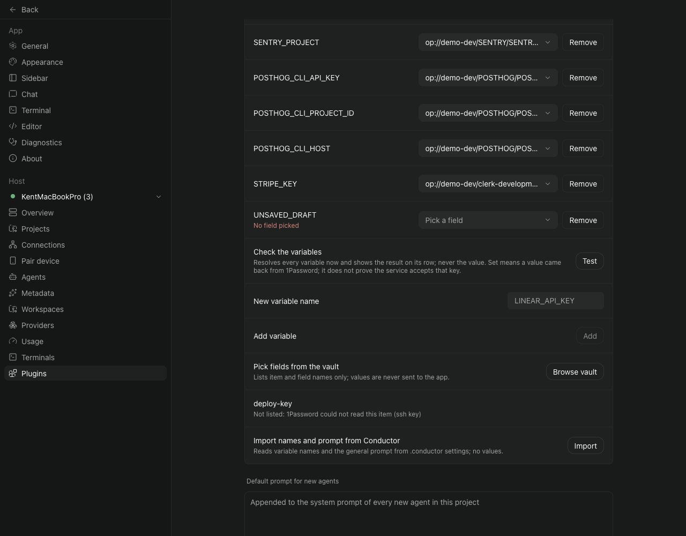 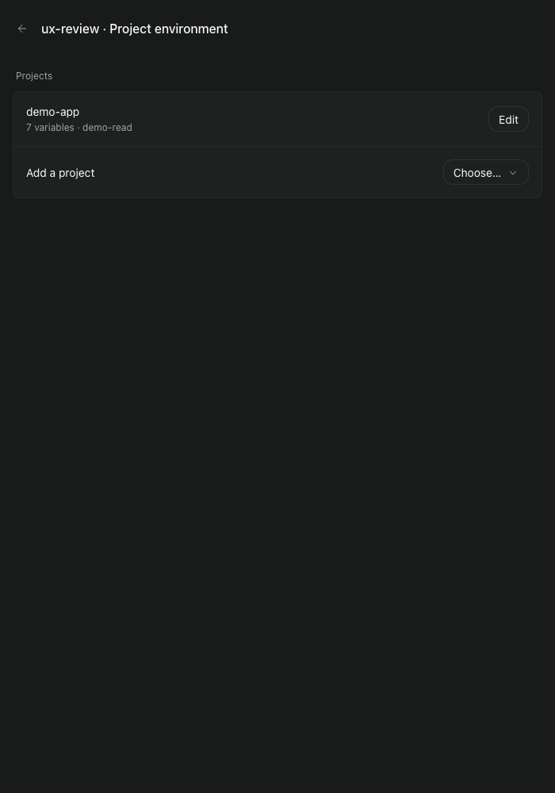 |
Silent loss of work. It is worse than the r3 "unsaved warning" gap because Kent did nothing to leave. Split-screen, a narrow window or rotating a phone triggers it. | Keep the draft and the open project outside the component that the host remounts, for example in a module-level store keyed by root. Restore it when the screen mounts again. Pair this with the leave guard. |
| 4 | blocking | The field picker is a flat list of raw paths. No grouping by item, no search, no mark on fields another variable already uses. The current choice is shown only by text colour. A reference that is not in the vault is placed first and coloured as the current choice, with no "not found". 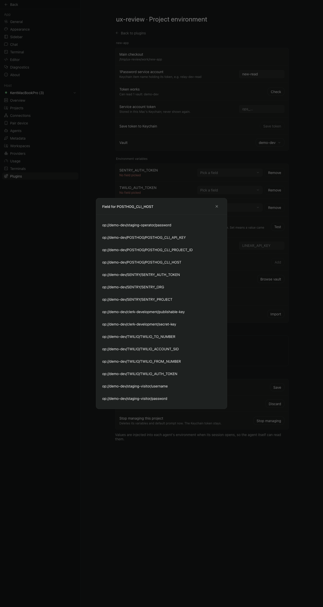 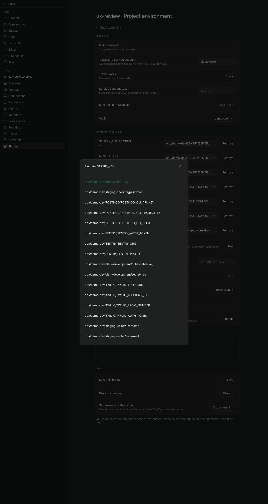 |
With ADR 0005's layout (one Secure Note per service, label equals variable name) the right answer is nearly always "the field named like this variable". Kent still has to scan every path. A broken reference looks like a valid, selected one. | Group by item, show labels only, add search, put the exact label match first as "Suggested", show "used by X", a check mark on the current choice, and "not in vault" in red for a stale reference. Move unreadable items into the picker's footer. |
| 5 | confusing | Adding a variable takes three separated steps. Name in one row, Add in another, then a field elsewhere. The new row is red at once. 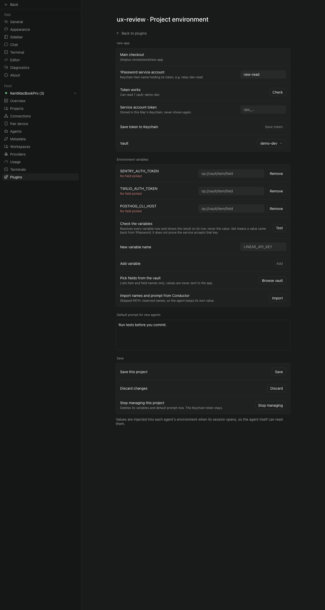 |
The layout forces an order, then marks the row as an error for following it. The name is typed by hand even though the field label usually is the name. | One "+ Add variable" action opens the picker. Picking a field creates the row, with the name taken from the label and still editable. "Name only" stays as a secondary choice. |
| 6 | confusing | One edit wipes every result. Re-picking one field cleared an unrelated failure on another row. 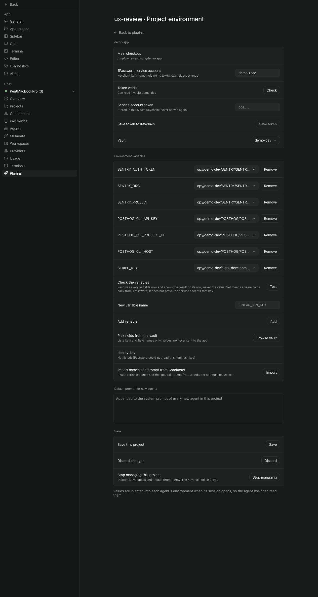 |
The rule "results match the draft" is right, but applying it to the whole card hides failures Kent has not fixed yet. | Clear only the edited row's result. Other rows keep theirs, marked as from the last Test. |
| 7 | confusing | Failures give no next step. "the 1Password field is empty" and "field not found in the vault" sit in red with nothing to press. | Kent knows it failed, not what to do. The empty-field fix happens in 1Password, and the screen does not say so. | One action per cause: "Pick another field" for not found or outside the vault; "Fill it in 1Password, then Test" for empty; "Check token" for token causes. |
| 8 | confusing | The connection card is six rows of equal weight for a one-time setup. A status shown as a row label; token and its Save on separate rows; Vault changes kind after the check; "1Password service account" is really a Keychain item label. 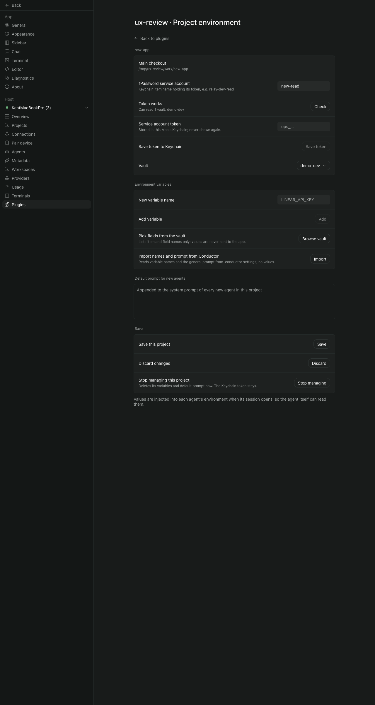 |
After the first day this card is noise above what Kent edits most. On the first day it reads as a form, not as steps. | Once connected, collapse to one line: "● Connected · new-read · demo-dev · Change". When not connected, show numbered steps: name, paste token (check + store in one action), vault. |
| 9 | confusing | Save, Discard and Stop managing are equal siblings at the bottom. Save is enabled with no changes and closes the editor silently. Stop managing shows for an unsaved project. The confirm dialog styles the destructive button like Keep. 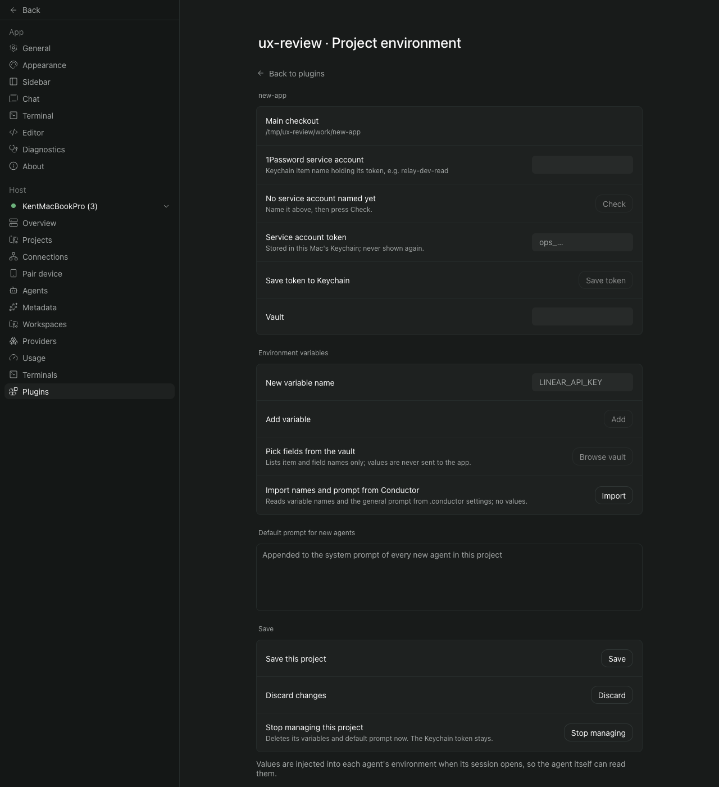 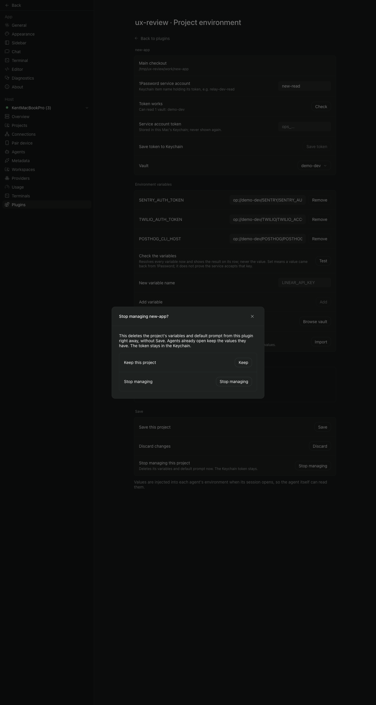 |
No dirty state, no success signal, and a destructive action next to the main one. | A sticky footer: "3 unsaved changes · Discard · Save". Show a "Saved" toast (useToast is in the plugin kit and unused). Move Stop managing to its own danger section, hide it for an unsaved project, and colour it red. |
| 10 | confusing | Notes posing as rows. An unreadable item ("deploy-key") and import notes appear inside the variables card. 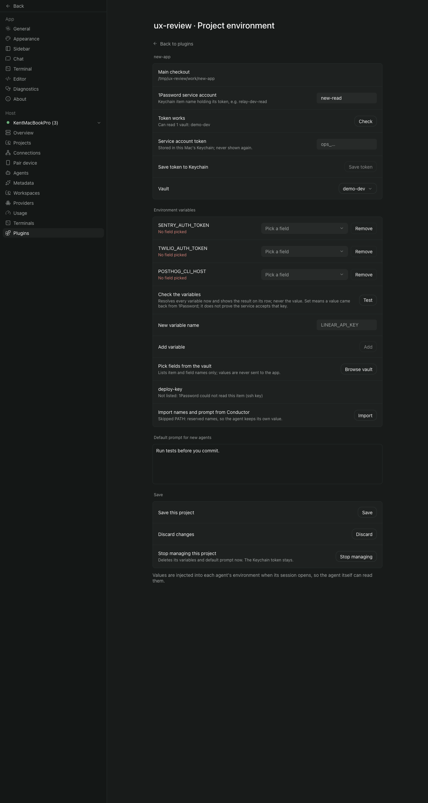 |
They read as variables, or as rows that need an action. | Unreadable items go into the picker's footer. The import result becomes a toast. |
| 11 | polish | The Test disclaimer is two sentences of permanent hint, four lines at 400 px (m03). | It pushes the content down and is read once. | Put Test in the section header (SettingsSection trailing), and the disclaimer behind its info. |
| 12 | polish | Success "set" is muted grey, in the same style as a hint. Paseo's own Providers screen uses a dot plus a word (p02). | Success and silence look alike, and the screen does not match the host's style. | Use a status dot plus a word: green "set", red "failed: ...", grey "not tested". |
| 13 | polish | The project list shows a count, not health. Paseo's Projects screen uses rows with a chevron (p01). "Add a project" is a dropdown labelled "Choose...". | Kent cannot see which project is broken without opening each one. | Rows with a chevron: "demo-app · ● 1 of 7 failing at last test". "+ Add project" opens a list. |
| 14 | polish | The placeholder "LINEAR_API_KEY" is close in contrast to real values. In the picker at 400 px, paths wrap as "op://demo-" / "dev/..." (m04). The closing sentence about agents reading values floats unstyled under the cards. | These small frictions add to the feeling that the screen is unfinished. | Use "e.g. LINEAR_API_KEY". Show labels in the picker, not paths, which removes the wrap. Move the sentence into the variables section's info. |
| Task | Concern | Story served |
|---|---|---|
| draft-survives-remount | The draft and the open project survive a host remount (finding 3). Do this first; it loses work today. | unsaved-warning (r3), pulled forward |
| ref-cell-one-control | Each row's field is always a picker that loads the vault on first open. The Browse vault row is removed, and manual entry moves into the picker (finding 1). | pick-field, add-remove-variable |
| ref-shows-item-field | The row shows ITEM › field, without the vault, never cut off at the field. A label that differs from the name gets a soft warning (finding 2). | pick-field |
| picker-grouped-search | The picker groups by item, has search, a suggested label match, "used by", a check mark on the current choice, "not in vault" for a stale reference, and unreadable items in its footer (findings 4, 10). | pick-field |
| add-variable-one-step | "+ Add variable" opens the picker; the name comes from the label and stays editable (finding 5). | add-remove-variable |
| test-result-per-row | An edit clears only that row's result; each failure cause names its next step (findings 6, 7). | test-each-variable, plain-failure-reason |
| save-footer-danger-zone | Sticky footer with a dirty count, a Saved toast, and Stop managing in a red danger section, hidden while unsaved (finding 9). | add-remove-variable/q7, unsaved-warning |
| connection-collapse (optional) | One status line when connected; numbered steps when not (finding 8). | token-works, paste-token, pick-vault |
Side note: journey question add-remove-variable/q8 still describes a guessed reference (op://<vault>/<name>/credential); the code at 1adf630 uses an empty reference (newVariable).